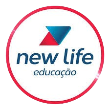

Olá!
Seja bem vindo ao meu site! Aqui você vai encontrar informações sobre mim, como minhas experiências escolares e profissionais.
Sobre Mim:
Meu nome é Lucas Blatt, tenho 21 anos e sou nascido e criado em Passo Fundo, Rio Grande do Sul.
Colorado de corpo e alma, fanático por futebol, entusiasta de video games e analista DevOps nas horas vagas (brincadeira hehehe).
Atualmente atuo como analista DevOps, onde trabalho com tecnologias como Amazon Web Services, Datadog, Akamai, Grafana, ArgoCD, GitLab e Service Now.
Minha Carreira:
NOC/Operação
2021-2023
Trabalhei como analista de infraestrutura, com foco na monitoração do ambiente dos clientes. As principais tecnologias que utilizei foram Opsgenie, Datadog, Oracle WLS, Jira, Grafana, Linux OS, Dynatrace, Jenkins, Rundeck, Rancher, AWS, BitBucket e Service Now.
Projeto RaiaDrogasil
2023-Presente
Trabalho alocado em um projeto da RD Saúde como analista DevOps, com foco em manter a integridade e o melhor funcionamento do ambiente produtivo. Utilizo as seguintes tecnologias: AWS, GitLab, Trello, Kubernetes, Datadog, Grafana, ArgoCD e Service Now.
Formação Acadêmica:
Escola Estadual de Ensino Médio Alberto Pasqualini
2009-2020
Ensino Fundamental e Ensino Médio

Atitus Educação
2021-2024
Ensino Superior
Cursos Extracurriculares:
Senac RS
2017
Informática Básica, Windows e Pacote Office

Escola New Life
2018-2020
Informática Básica, Windows, pacote Office, Youtuber e Photoshop
IMED #TeuFuturo
2020
Lógica de Programação, Introdução ao JavaScript e Soft Skills, Scratch, P5JS e Programação Web

AWS Certified Cloud Practitioner
Agosto de 2023
Código da credencial: BHJ3XKJK4NF41Q58
Contato:
blatt.lucas.2003@gmail.com GitHub